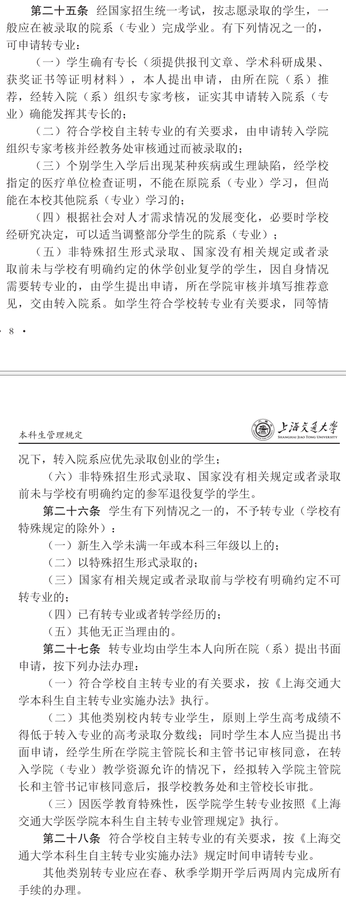

你是否在找 直博... 
5 个赞
pat pat lz，支持维权，狠狠地刚下去，这不就是欺负人吗
5 个赞
支持！
我是22年毕业的，我那个时候就是宣传只要挂科不超过一门就可以随便转，从宣传大会到思政宣传都是这个口径。
27 个赞
加油啊lz，带着我们再冲一次把
3 个赞
感觉也是为后来的同学提个醒：不要去相信某个宏大的机构或者概念（国家，军队会来骗我吗？），因为和你对接的都是一个一个实际的人，比如武装部的xx，电院的领导。这些人可不可以相信你得自己去判断
119 个赞
配合马逆前几天关于征兵开的团更难绷了
12 个赞
支持lz维权
4 个赞
支持！简直和强基一个样 
4 个赞
拥抱一下楼主，并且建议直接发邮件向dzb硬刚（如果真的是合理诉求被这么说的话）。至少有2个诉求点：1. 人身攻击；2. 未兑现承诺。
31 个赞
建议还是知乎治校吧，最起码不要再出现更多受害者了 
44 个赞
同意，我觉得有必要把事情搞大点
在论坛闹闹谁diao你啊
71 个赞
全去CS可能是稍微压力大了一点。但是电院三幻神+经济金融五个专业，总共就60个不到的学生，还压力很大？
按题主说法，电院连发起转专业流程都没有。我也是电院，我支持和这种腌臜事情斗，有本事学校就不要在动员大会的时候说什么转专业的事情，某些思政就不要拿转专业来诱惑学生，两年青春还是值点钱的，不要浪费大家感情。
71 个赞
支持楼主，刚入学听宣讲的时候我也是这么以为的，甚至分流到不满意的专业都会开玩笑说要不服役算了，原来还是这么恶心人。
8 个赞
感谢大家的回复和关注，很多同学提到了当时的宣传政策，说明也不是lz本人的记忆发生了偏差。
转专业制度本身就是一个很规范化的程序，原本就应该避免人情等因素的主观操作，实际上现在还需要同学自己的关系或者联系对方学院或者专业，双方谈拢，要求对方接受后才可以发起交我办流程。
按照程序来说我应该直接与武装部老师交流，告知自身的意向，并提交转专业申请书，剩下的应该是交我办发起流程，然后顺利进入新专业就学。

当年我在满足各种文件和规则的前提你学院不遵守相关规则，我体谅各个老师的难处，最后自己放弃了权益。
现在我啥也没干上来就攻击我试图越过规则，那就来好好给大家宣传一下你们的“精彩”事迹。
个人建议是不要相信学院宣传的福利政策，除非校方出具纸质材料和录音文件。现在是转专业，以后可能是其他的哦，没人抗争的话，好日子在后面呢。
54 个赞
这个事情真的麻烦。因为我也参加过武装部的宣讲，当时确实口头上一直在“暗示”：参军回来之后可以随便转专业。但白纸黑字文件又的确写的是“经院校批准”。
说实话感觉这帮老油子在跟刚高考出来的大学生玩儿心眼子，多少沾点坏
82 个赞
我一般在pdd买东西不看商家宣传，直接去看评价。
33 个赞
其实不意外的。
交大很多对学生的政策、课程，根本对不起这群高质量的学生。
52 个赞
每个人都去最好的专业不现实，也会引起那几个专业的不满。可以在参军前根据成绩确定允许转的专业的范围，认可就入伍，退伍后无条件履约，这样会好一些
14 个赞
你先搞清楚，每年没有这么多征兵额度。
30 个赞